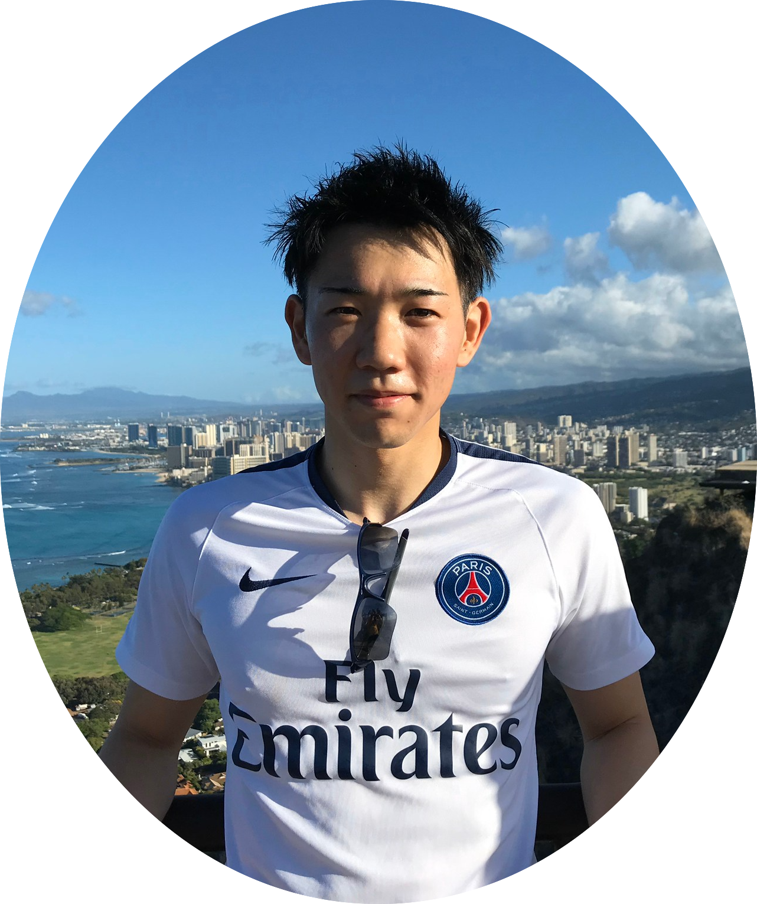
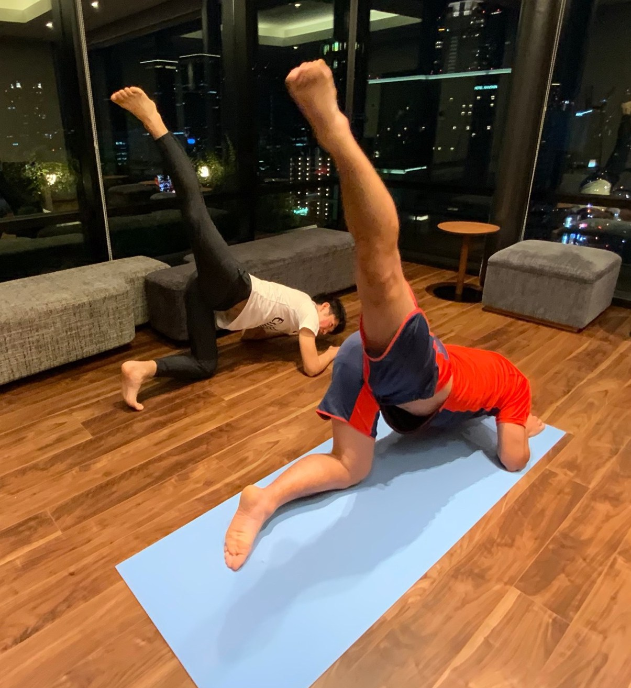
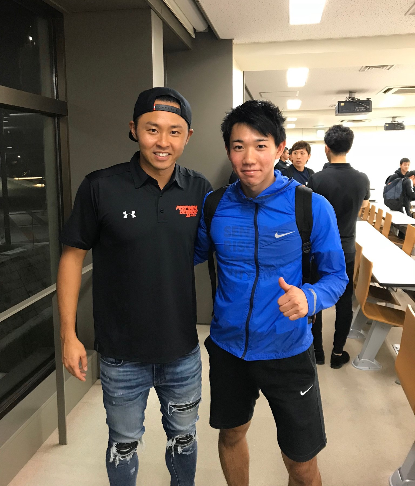
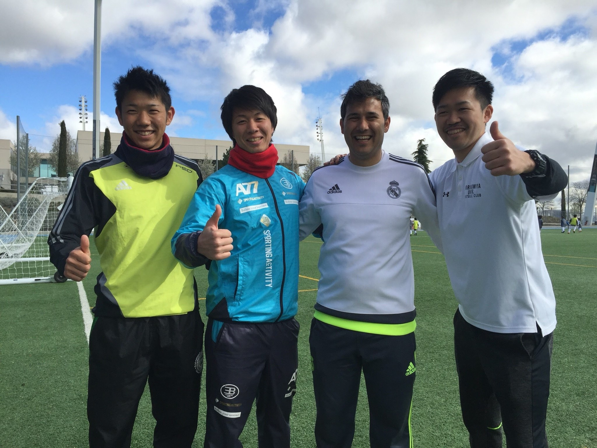

Profile
KOYA NORIKANE （則包 晃哉）

- 1996年9月18日 京都府生まれ
- 少年時代より高校まで一貫してサッカーに情熱を注ぎ冬の全国高校サッカー選手権出場(ベスト８)
- 人の身体を支えることに興味を持ち、柔道整復師の学業に励む
- 身体トレーニングの大切さを学び、トレーナーとなり活動
- 鍼灸という東洋医学の考えに興味を持ち、鍼灸師の学業に励む
- その後、プロスポーツ選手や企業勤めの方、幼稚園児～大学生など様々な方の身体の悩みを、トレーニング・鍼灸・整体を通して活動中
- 趣味は珈琲作り、トレーニング、映画鑑賞
Qualification
- 鍼灸師
- 柔道整復師
- 日本赤十字社 救急法救急員
- 東急スポーツオアシス認定トレーナー
- 栄養コンシェルジュ２つ星

Career
- FC長岡京コーチ兼トレーナー
- 某高校サッカー部 学生トレーナー
- レアル・マドリード ファンデーションキャンプ （スペイン・マドリード）トレーナー帯同
- Jリーグキャンプ 学生トレーナー帯同
- Vervento 京都FC フィジカルコーチ
- 某サッカークラブチーム アシスタントコーチ
- 東急スポーツオアシス パーソナルトレーナー
- Jリーガー 指導

